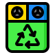

<nav class="sb-topnav navbar navbar-expand navbar-dark bg-dark">
   
    <section>
        <article class="logo navbar-brand">
           
            
            <p class="texto-logo1"><span class=span1>Resi</span>duos <span class="span2">Patolo</span>gicos</p>
        </article>
    </section>
 
    <button class="btn btn-link btn-sl order-1 order-lg-0 me-4 me-lg-0" id="sidebarToggle" href="#!"><i class="fas fa-bars"></i></button>

</nav>

<div id="layoutSidenav">
    <div id="layoutSidenav_nav">
        <nav class="sb-sidenav accordion sb-sidenav-dark" id="sidenavAccordion">
            <div class="sb-sidenav-menu">
                <div class="nav">
                    <div class="sb-sidenav-menu-heading">Core</div>
                    <a class="nav-link" href="index.html" routerLink="home">
                        <div class="sb-nav-link-icon"><i class="fas fa-tachometer-alt"></i></div>
                        Home
                    </a>
                    <div class="sb-sidenav-menu-heading">Administrativo</div>

                    <a class="nav-link"  routerLink="certificado">
                        <div class="sb-nav-link-icon"><i class="fas fa-columns"></i></div>
                        Historial De Certificados Emitidos
                    </a>
                  
                    <a class="nav-link"  routerLink="generador">
                        <div class="sb-nav-link-icon"><i class="fas fa-columns"></i></div>
                        Generadores
                    </a>
                  
                   
                    <a class="nav-link"  routerLink="tipos-residuos">
                        <div class="sb-nav-link-icon"><i class="fas fa-table" ></i></div>
                        Registro de Tipo De Residuos
                    </a>
                </div>
            </div>
            <div class="sb-sidenav-footer">
                <div class="small">Logeado como:</div>
                Victor Alvarez
            </div>
        </nav>
    </div>
    <div id="layoutSidenav_content">
        <!-- contenedor Principal -->
        <main >
             
            <router-outlet></router-outlet>
      
        </main>

        <footer class="py-4 bg-dark mt-auto">
           
            <div class="contenedor-footer">
                    <div class="text-muted">Copyright &copy; Website 2024- developed by Gerardo Garro</div>
                    <div class="footer-datos">
                        <p><a href="2664016108"></a></p> 
                        <p> <a href=geragarro93@gmail.com></a></p>
                    </div>
                    
             </div>
           
        </footer>
    </div>
</div>

<script src="https://cdn.jsdelivr.net/npm/bootstrap@5.2.3/dist/js/bootstrap.bundle.min.js" crossorigin="anonymous"></script>
<script src="js/scripts.js"></script>
  